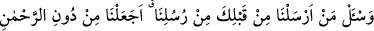
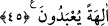

Ey oğul, Kur’ânın sadece zâhirine bakma,
Şeytan Âdem’in çamurundan başka bir şey görmedi.
Kur’ân’ın zâhiri de insanın şahsı gibidir,
Nakışları dışarıda, canı ise gizlidir.
45. Senden önce gönderdiğimiz elçilerimize (onların ümmetlerine) sor!
Rahmân’dan başka tapılacak tanrılar (edinin diye) emretmiş miyiz?
“Senden önce gönderdiğimiz elçilerimize” onların ümmetlerine ve din âlimlerine
“sor!”
Burada “onların ümmetlerine” şeklinde bir muzaf takdirine ihtiyaç vardır. Gerçekten
önceden gönderilen peygamberlere sormak mümkün olmadığından mânâ, “önceden
gönderdiğimiz elçilerin ümmetlerine ve din âlimlerine sor!” demektir. Bu tarzda bir
diğer âyet-i kerîmede şöyle buyrulmaktadır: “Eğer sen, sana indirdiğimizden şüphede
isen senden önce kitabı okuyanlara sor!” (Yûnus, 10/94)
Bu mecâzî isnâdın faydası şudur: Burada sorulan şey, bizzat elçilerin haber verdikleri
şeyin aynısıdır. Yoksa ümmetlerin yahut din âlimlerinin kendi uydurup söyledikleri
değildir. İşte mecâzî isnadla buna tenbih edilmektedir.
“Rahmân’dan başka tapılacak tanrılar edinin diye emretmiş miyiz?” Hiç putlara
tapmalarına dâir bir hüküm vermiş miyiz? Ve onların dinlerinden herhangi birinde böyle
bir hüküm var mıdır? Bu sorudan maksad bütün peygamberlerin tevhidde ittifak
ettiklerine delil getirmek ve bu tevhîdin Peygamberimiz (s.a.)’in ortaya koymuş olduğu
yeni bir şey olmadığına tenbih içindir. Evet, bu durum Peygamber (a.s.)’ın yeni bir
buluşu değildir ki yalanlanıp kendisine düşmanlık edilsin. Zîrâ tevhid konusu,
müşrikleri Peygamber’i yalanlamaya ve ona muhalefet etmeye sevk eden sebeplerin en
kuvvetlisidir.
İbn Şeyh şöyle demiştir: Soru sormak, şüphe ve karışıklığı ortadan kaldırmak içindir.
Peygamber (s.a.)’in bu konuda bir şüphesi yoktu. Burada hitap Rasûlullah’adır, ancak
bundan murad başkasıdır.
Hz. Âişe (r.anha.) vâlidemizin bildirdiğine göre bu âyet-i celîle indiği zaman
Peygamberimiz (s.a.) şöyle buyurmuşlardır: “Bu konuda şüphe eden ben değilim; bu
soruyu soracak olan da ben değilim.”[169]
Zemahşerî bu âyetteki soruyu tamamen mecaz olarak yorumlamıştır. Dolayısısyla bu
hitaptan maksad, Peygamber (s.a.)’den onların din ve milletlerini inceleyip
araştırmasını istemektir. Bu ifâde Arapların “yere sor ırmaklarını kim yarmış, ağaçlarını
kim dikmiş, meyvalarını kim devşirmiş?” sözünün bir benzeridir.